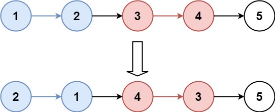
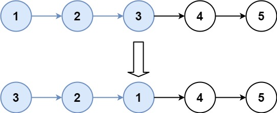

题面
给你链表的头节点 head ，每 k 个节点一组进行翻转，请你返回修改后的链表。
k 是一个正整数，它的值小于或等于链表的长度。如果节点总数不是 k 的整数倍，那么请将最后剩余的节点保持原有顺序。
你不能只是单纯的改变节点内部的值，而是需要实际进行节点交换。
示例 1：

输入： head = [1,2,3,4,5], k = 2
输出：[2,1,4,3,5]示例 2：

输入： head = [1,2,3,4,5], k = 3
输出：[3,2,1,4,5]提示：
- 链表中的节点数目为
n 1 <= k <= n <= 50000 <= Node.val <= 1000
进阶： 你可以设计一个只用 O(1) 额外内存空间的算法解决此问题吗？
思路
- 前置题目：92. 反转链表 II-92-reverse-linked-list-ii)，先掌握局部反转的操作
- 整体流程：
- 遍历链表得到长度 n
- `while n >= k`：每轮反转 k 个节点，反转操作和反转整个链表完全一样（pre/cur/tmp 三指针循环 k 次）
- 每轮反转后的收尾连接（和 92 题一样的四步）：
new_next = p0.next：抓住反转前这组的第一个节点（反转后变成组的最后一个）p0.next.next = cur：让组尾接上后面的节点p0.next = pre：让 p0 指向反转后的组头p0 = new_next：p0 跳到组尾（= 下一组的前驱），不是只前进一步——这个节点反转前是组头，反转后变成了组尾，实际前进了 k 步pre和cur不需要在每轮 while 循环开始时重置：cur：反转 for 循环结束后，cur已经自动指向下一组的第一个节点pre：虽然带着上一轮的残留值，但收尾阶段的p0.next.next = cur会覆盖掉错误的链接，不影响最终结果- 易错点：
- 循环条件必须是 `while n >= k`，不是 `while n`：剩余节点不足 k 个时不应反转，否则
cur会变 None 导致cur.next崩溃 - 收尾的两行顺序不能反：
p0.next.next = cur必须在p0.next = pre之前，否则p0.next被覆盖后找不到原来的组头了
代码实现
class Solution:
def reverseKGroup(self, head: Optional[ListNode], k: int) -> Optional[ListNode]:
cur = head
dum = p0 = ListNode(0, head)
n = 0
while cur:
n += 1
cur = cur.next
pre = None
cur = head
while n >= k:
n -= k
for _ in range(k):
tmp = cur.next
cur.next = pre
pre = cur
cur = tmp
# pre/cur 会随着每次反转变化，用 p0 记录每次反转的前驱节点
new_next = p0.next
p0.next.next = cur
p0.next = pre
p0 = new_next
return dum.next- 复杂度：时间 O(n)，空间 O(1)